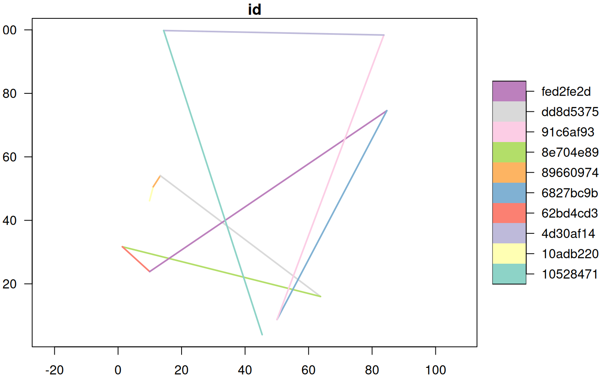

Generate a unique ID for a line segment, based on the non-cryptographic murmur32 hash.
generateLineHash(x, precision = -1, algo = "murmur32")an sf object, with 1 line segment per feature
digits are rounded to this many places to the right (negative) or left (positive) of the decimal place
hash function algorithm, passed to digest::digest()
A vector of unique IDs created from the hash of line segment start and end vertex coordinates. Unique IDs are returned in the order of records of x and can therefore be saved into a new column of the associated attribute table. NA is returned for empty geometries.
The input sf object must NOT contain multi-part features. The precision specified should be tailored to the coordinate system in use and the snapping tolerance used to create join decision line segments. A precision of 4 is reasonable for geographic coordinates (snapping tolerance of 0.0001 degrees or ~ 10 meters). A precision of -1 (snapping tolerance of 10 meters) is reasonable for projected coordinate systems with units in meters.
An error is issued if any non-unique IDs are generated. This could be caused by using coordinates that do not contain enough precision for unique hashing.
if(requireNamespace("sf")) {
# 10 random line segments
# shared end vertices
.x <- runif(n = 11, min = 0, max = 100)
.y <- runif(n = 11, min = 0, max = 100)
m <- matrix(c(.x, .y), ncol = 2, byrow = TRUE)
# init LINESTRING geometries
a <- lapply(1:(nrow(m) - 1), function(i) {
.idx <- c(i, i+1)
geom <- sf::st_sfc(sf::st_linestring(m[.idx, ]))
a <- sf::st_sf(geom)
})
# flatten list -> 10 feature sf object
a <- do.call('rbind', a)
# line hashes
a$id <- generateLineHash(a, precision = 0)
# graphical check
plot(a, lwd = 2, key.width = lcm(4), axes = TRUE, las = 1)
# simulate empty geometry
a$geom[2] <- sf::st_sfc(sf::st_linestring())
# NA returned for empty geometry
generateLineHash(a, precision = 0)
}

#> [1] "a149a7b5" NA "3aa8ae21" "3cd09317" "4d71a738" "4cfb6777"
#> [7] "1fa21304" "dcb7a486" "30b1375d" "4e78e7bc"